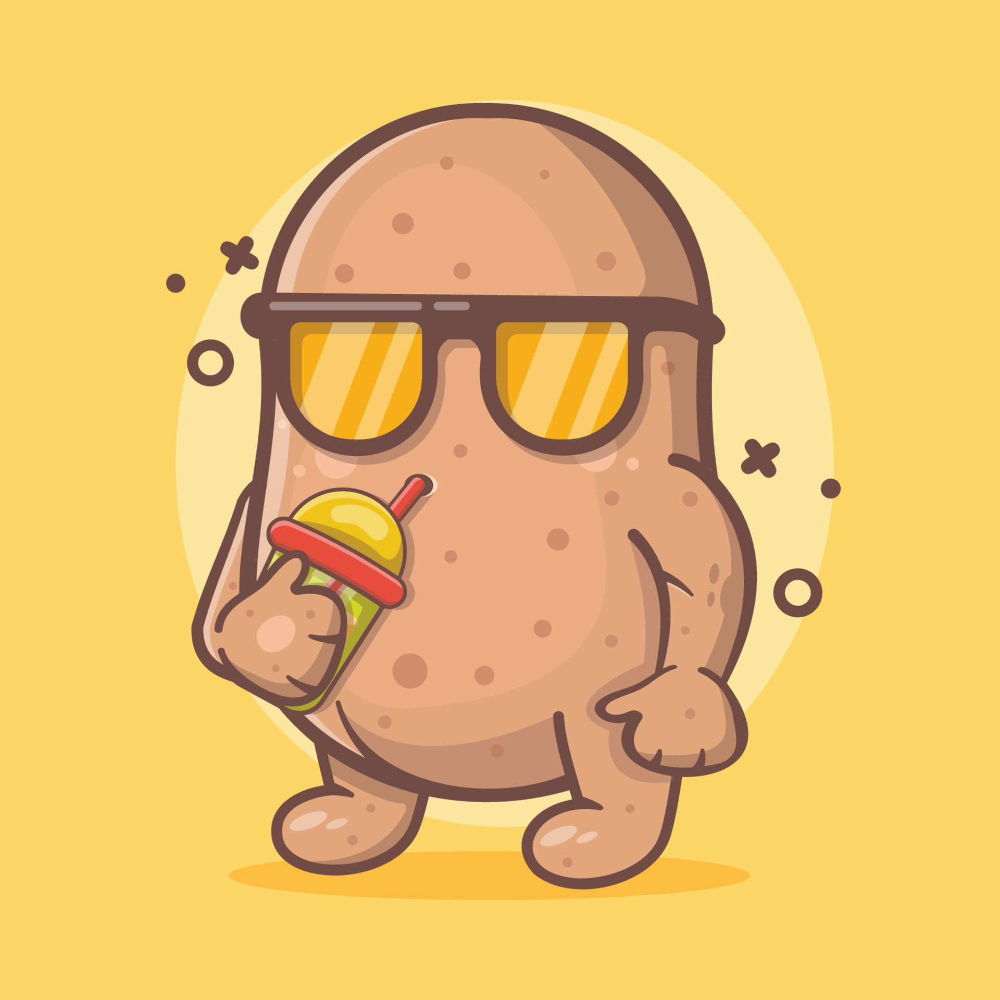
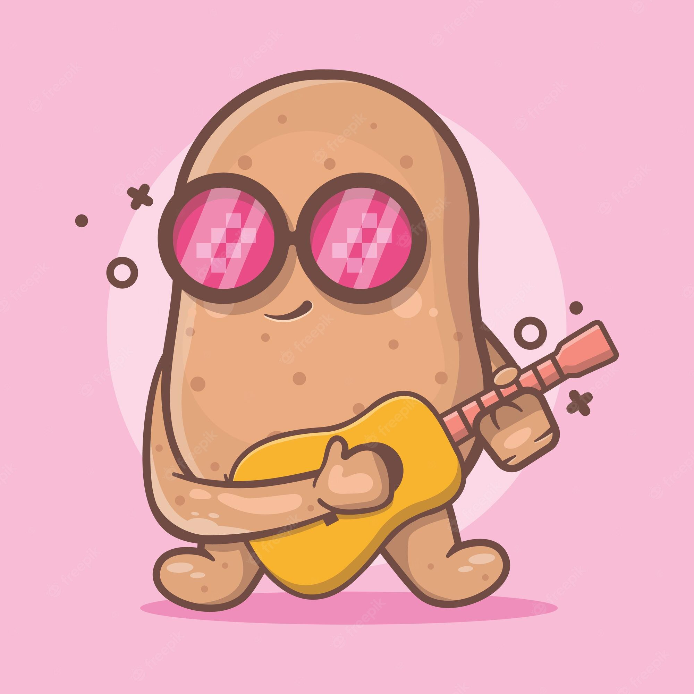
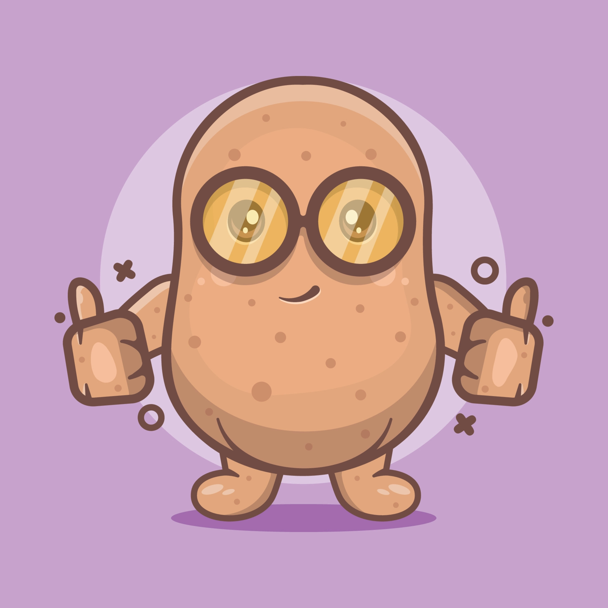

Did u know that?

Potatoes were the first vegetable grown in space in 1995.

In Shakespeare’s time the potato was known simply as the “apple of love.”

The Potato Museum in Washington DC contains 2000 potato artifacts.

A potato has more potassium than a banana!!!